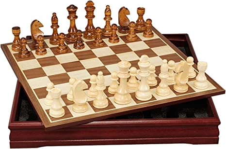
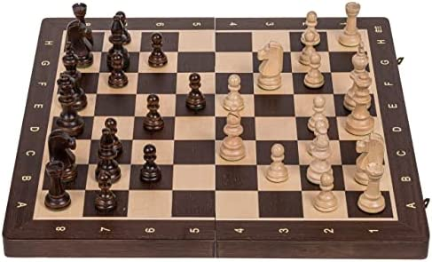
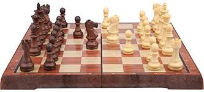
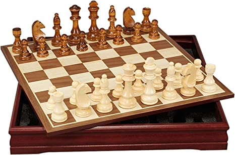
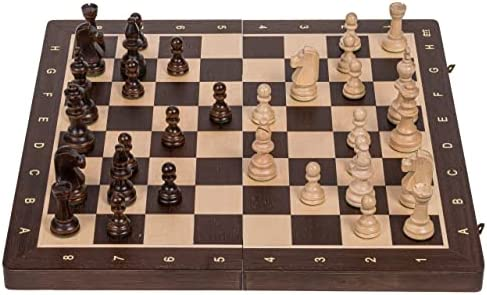
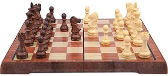
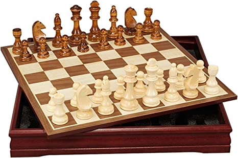
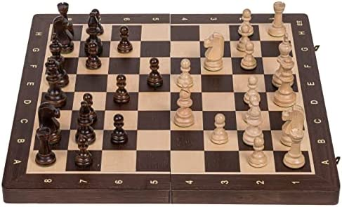
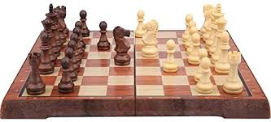

Client API to inference image(s) from a Roboflow DataSet
Roboflow DataSet(s) used:
Chess Piece Detection API
Hard Hat Detection API
What is Roboflow Inference?
Roboflow Inference:
Takes data inputted into a datset and allows the CPU to "predict" what is showing in the image selection
Application Prediction (Confidence):
Application starting confidence value = 17, please use the slider to change the confindence level
Note: The user must reselect a new image to view the updated prediciton change(s)
Slider (Options):
Moving the slider to the left will increase prediciton(s) returned, and vice versa moving the slider in the right direction
What is Roboflow Confidence?
Roboflow Confidence:
Is the value used within our prediction estimated value, confidence values range between (1 - 100)
A lower confidence value allows more room for errors and in return allows the CPU to make more predictions


